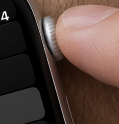
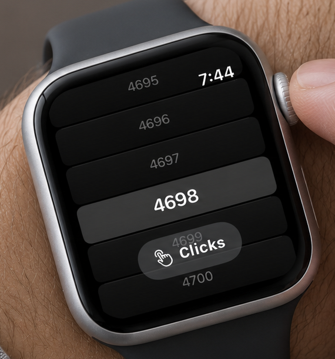
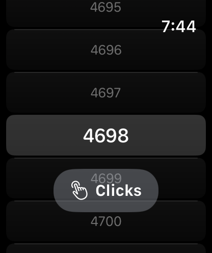
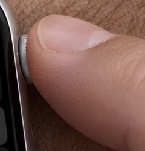
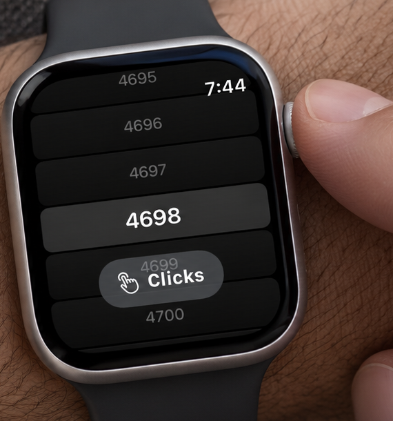
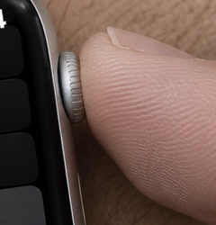
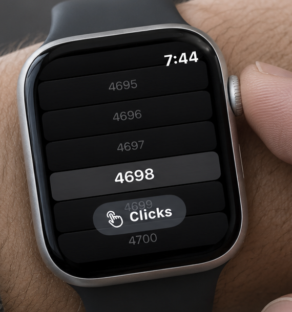
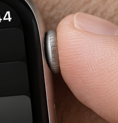
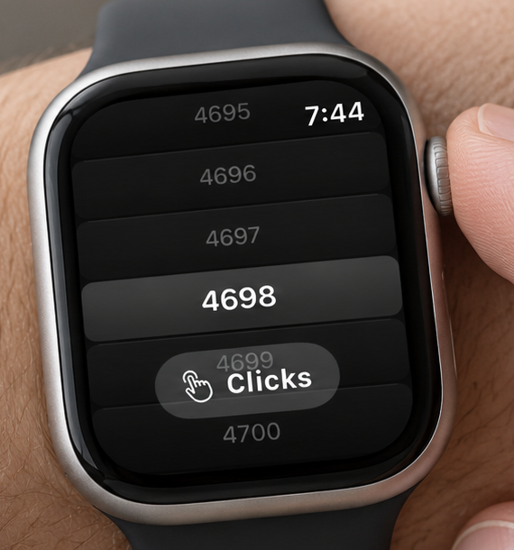

Four fresh compositions
Generated from the real 4698 screenshot and official Watch hardware reference. Each uses a new prompt and photograph with the index finger partly covering the Crown. C is selected by the user. Preserve the exact photograph, display, Crown and headline as presented.
The displays are generated interpretations of the screenshot. Compare the real source beside each Watch crop. Hardware inspection applies to the visible parts of the Crown.
A — Soft window light
Natural window-light scene and clear copy. Finger overlaps the outer Crown face; one knurled rim is visible. Screen values and copy are correct, but clock placement and row clipping are interpreted rather than pixel-identical.
Crown and finger contact

Unretouched crop enlarged for inspection. The fingertip partly covers the outer face.
Open full PNG — 1916 × 821Generated Watch / real screenshot

Generated interpretation
Authentic source screenshotB — Overhead on linen
Earlier assistant preference; user selected C. The index fingertip covers most of the outer Crown face, with a small rim visible. Dark linen creates clear headline space. Screen values and copy are correct; final screen fidelity still needs review.
Crown and finger contact

Unretouched crop enlarged for inspection. The fingertip partly covers the outer face.
Open full PNG — 1916 × 821Generated Watch / real screenshot

Generated interpretationAuthentic source screenshotC — Close tactile detail · Selected
Closer view with clear finger contact and one visible rim. The generated clock sits in an extra top area above 4695, changing the authentic screen layout; this is the weakest screen match.
Crown and finger contact

Unretouched crop enlarged for inspection. The fingertip partly covers the outer face.
Open full PNG — 1916 × 821Generated Watch / real screenshot

Generated interpretationAuthentic source screenshotD — Warm everyday setting
Warm neutral scene with the finger covering the outer Crown face. One visible rim. Correct number sequence and copy; row clipping and clock placement remain generated interpretations.
Crown and finger contact

Unretouched crop enlarged for inspection. The fingertip partly covers the outer face.
Open full PNG — 1916 × 821Generated Watch / real screenshot

Generated interpretationAuthentic source screenshotAll prior versions remain intact. This round did not upload, submit or publish Store assets.
Package notes · Previous repair round